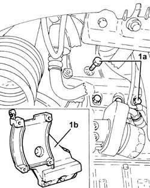
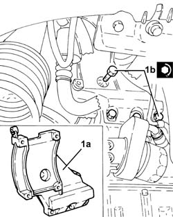
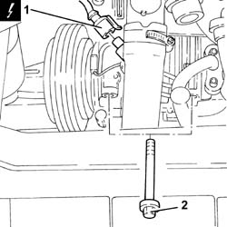
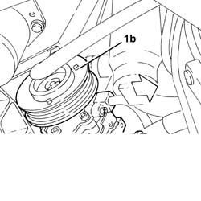
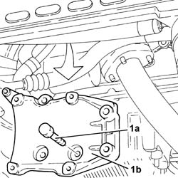
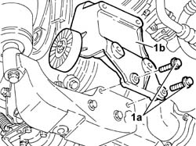
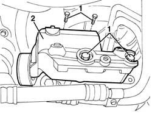

5040A26 compressor mount - r r
- Path
- Procedures > 50 AUXILIARY UNITS > 5040 AIR CONDITIONING CASING AND COMPONENTS > 5040A air conditioner coolant circuit > 5040A26 compressor mount - r r
- Kind
- repair procedure (removal / refitting; the operation number is the code)
- Applies to
- engines: 2.0 JTS, 1.9 JTD 8v , 2.0 JTS, 2.4 JTD 10v, 2.4 JTD 20v; all production periods
- Interactive page
- https://sloeber94.github.io/elrnDB-a156/en/#/3238308
Applies to: engines: 2.0 JTS, 2.0 JTS; all production periods; only with equipment: Air Conditioner
 Removing
Removing
 Refitting
RefittingDrain the air conditioner coolant circuit 5040A10 Air conditioning refrigerant CIRCUIT - Draining and Refilling .
Proceed with removal 4450B04 right front wheel r r .
Proceed with removal 7055B54 under-engine guard - r r .
Proceed with removal 5040A20 air conditioner compressor - r+r - includes fluid level check and top up if necessary .
1. Undo the bolts (1a) and remove the air conditioning compressor support (1b).

Applies to: engines: 2.0 JTS, 2.0 JTS; all production periods; only with equipment: Air Conditioner
Refitting
Removing1. Place the air conditioning compressor mounting (1a) back in its housing and fix it tightening the bolts (1b) to the recommended torque.
 | Fastening | Component | Ø | Value (daNm) |
|---|---|---|---|---|
1b | Bolt | COMPRESSOR MOUNT (AC) | M10 | (Crankcase side) 4.5 ÷ 5.5 |

Applies to: engines: 2.0 JTS, 2.0 JTS; all production periods; only with equipment: Air Conditioner
Proceed with refitting 5040A20 air conditioner compressor - r+r - includes fluid level check and top up if necessary .
Proceed with refitting 7055B54 under-engine guard - r r .
Proceed with refitting 4450B04 right front wheel r r .
Fill the air conditioner coolant circuit 5040A10 Air conditioning refrigerant CIRCUIT - Draining and Refilling .
Connect the negative (-) battery terminal.
Remove the car from the ramps.
Applies to: engines: 1.9 JTD 8v ; all production periods; only with equipment: Air Conditioner
Removing
Refitting4450B10 Front WHEEL (one) - R.R.
7055B64 Engine compartment DUST shield in front wheel arch (one), left or right - R.R.
1092G10 single engine belt r r
1072C44 exhaust manifold heat shield on bulkhead - r+r
1. Disconnect the electrical connection from the air conditioning compressor.
 | Name | Connector |
|---|---|---|
1 | Air conditioning compressor "on" electromagnet |
2. Undo the upper bolts fixing the air conditioning compressor.

Applies to: engines: 1.9 JTD 8v ; all production periods; only with equipment: Air Conditioner
Raise the car.
1. Undo the lower bolts (1a) and move the air conditioning compressor (1b) fastening it appropriately.

Applies to: engines: 1.9 JTD 8v ; all production periods; only with equipment: Air Conditioner
1. Undo the bolts (1a) and remove the air conditioning compressor support (1b).

Applies to: engines: 1.9 JTD 8v ; all production periods; only with equipment: Air Conditioner
Refitting
RemovingFit the air conditioning compressor mounting and secure it using the bolts.
Place the air conditioning compressor back in its housing and secure it using the lower bolts.
Lower the vehicle.
Tighten the upper air conditioning compressor bolts.
Connect the electrical connection to the air conditioning compressor.
1072C44 exhaust manifold heat shield on bulkhead - r+r
1092G10 single engine belt r r
7055B64 Engine compartment DUST shield in front wheel arch (one), left or right - R.R.
Applies to: engines: 2.4 JTD 10v; all production periods; only with equipment: Air Conditioner
Removing
RefittingRefer to op. 5040A20 air conditioner compressor - r+r - includes fluid level check and top up if necessary , without disconnecting the pipes from the air conditioning compressor.
1. Undo the bolt (1a) and remove the air conditioning compressor support (1b).

Applies to: engines: 2.4 JTD 10v; all production periods; only with equipment: Air Conditioner
Refitting
RemovingFit the air conditioning compressor mounting and secure it tightening the bolts to torque.
| Fastening | Component | Ø | Value (daNm) |
|---|---|---|---|---|
- | Bolt | Air conditioning compressor support | M10 | 4.2 - 5.2 |
5040A20 air conditioner compressor - r+r - includes fluid level check and top up if necessary
Applies to: engines: 2.4 JTD 20v; all production periods; only with equipment: Air Conditioner
Removing
RefittingPlace the vehicle on a lift.
Drain the coolant ( 5040A10 Air conditioning refrigerant CIRCUIT - Draining and Refilling ).
7055B42 Additional FRONT WHEEL ARCH (one), left or right - R.R. (right)
7055B64 Engine compartment DUST shield in front wheel arch (one), left or right - R.R. (right)
7055B54 under-engine guard - r r
1092G10 single engine belt r r
5040A20 air conditioner compressor - r+r - includes fluid level check and top up if necessary
1. Undo the bolts securing the mounting.
2. Remove the support complete with fixed tensioner.

Applies to: engines: 2.4 JTD 20v; all production periods; only with equipment: Air Conditioner
Refitting
RemovingCheck that the compressor mounting is not damaged.
Reposition the compressor mounting.
Tighten the bolts.
5040A20 air conditioner compressor - r+r - includes fluid level check and top up if necessary
1092G10 single engine belt r r
7055B54 under-engine guard - r r
7055B64 Engine compartment DUST shield in front wheel arch (one), left or right - R.R. (right)
7055B42 Additional FRONT WHEEL ARCH (one), left or right - R.R. (right)
Repressurize using coolant fluid ( 5040A10 Air conditioning refrigerant CIRCUIT - Draining and Refilling ).
Remove the vehicle from the lift.
Topics linked from this page (10)
- 1072C44 exhaust manifold heat shield on bulkhead - r+r
- 1092G10 single engine belt r r
- 4450B04 right front wheel r r
- 4450B10 Front WHEEL (one) - R.R.
- 5040A10 Air conditioning refrigerant CIRCUIT - Draining and Refilling
- 5040A20 air conditioner compressor - r+r - includes fluid level check and top up if necessary
- 7055B42 Additional FRONT WHEEL ARCH (one), left or right - R.R.
- 7055B54 under-engine guard - r r
- 7055B64 Engine compartment DUST shield in front wheel arch (one), left or right - R.R.
- L20 Air conditioning compressor "on" electromagnet
Topics that link to this page (24)
- 1008A44 rear rigid mount - r r
- 1008A46 cam shaft left rigid mount - r r
- 1016C10 cylinder head - r + r and replace gasket
- 1020A20 crank case oil sump - r + r clean seals for sealant application
- 1020D10 front crank shaft oil seal cover - r + r and replace seals with timing belt removed
- 1020D11 front crankshaft oil seal cover-r r and replace seal with timing belt removed-includes cleaning mating surfaces and applying sealant
- 1020D15 Crankshaft oil seal FRONT COVER - R.R. and Replace. gaskets on engines with oil pump on crankshaft and heat exchanger
- 1020D36 flywheel end oil seal - replace for manual gearbox with hydraulic selection versions
- 1020D38 flywheel side oil seal - replace
- 1024B10 engine flywheel - r + r for versions with manual gearbox
- 1024B11 engine flywheel - r r for manual gearbox with hydraulic selection versions
- 1028H10 connecting rod and piston set - r r
- 1076B10 exhaust pipe assembly - r + r
- 1076B34 front catalytic converter attachment seal - replace
- 1080B62 catalytic converter - r + r
- 1084B26 emgine oil intake duct - r r
- 1084C10 engine oil heat exchanger - r + r
- 1088D24 rigid pipe for coolant inlet to water pump - r + r
- 1810A20 clutch - r + r
- 1810A28 clutch - r r for manual gearbox with hydraulic selection versions
- 2110A10 manual gearbox and differential - r + r
- 2110A11 manual gearbox with differential - r r for versions with hydraulic selection
- 2110C24 seals for gearbox input shaft - r r for manual gearbox with hydraulic selection versions
- 4130B40 outlet pipe from pump to power steering case r r